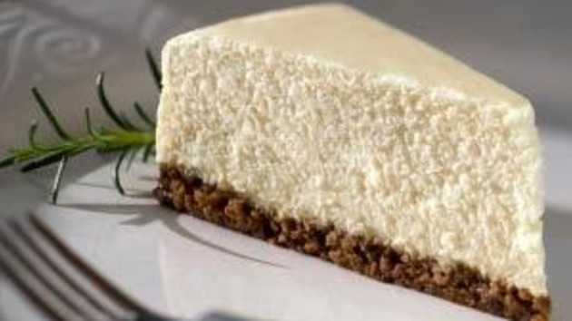

Classic Refrigerator Cheesecake Recipe

Ingredients
- 100 g digestive biscuits, or cookies, crushed into fine crumbs
- 50 g demerara sugar
- 50 g butter, melted
- 500 g full-fat cream cheese
- 100 g icing sugar
- 1 vanilla pod, sliced lengthways, or 1 tsp vanilla extract
- 200 ml double cream, lightly whipped
Method
- In a mixing bowl, mix together the biscuit crumbs and Demerara sugar. Add in the melted butter and mix well.
- Spoon the biscuit mixture into a 20cm spring-form cake tin lined with silicon paper or baking parchment. Use a metal spoon to press the biscuit crumbs down firmly and evenly. Chill in the refrigerator until set.
- In a large mixing bowl, using a whisk or a wooden spoon, beat together the cream cheese, icing sugar and vanilla pod seeds or vanilla extract until well mixed.
- Fold in the double cream, mixing well.
- Spoon the cream mixture over the chilled biscuit base, making sure that there are no air bubbles. Smooth the top of the cheesecake with a palette knife or metal spoon.
- Chill the cheesecake in the refrigerator for 1 hour until set.
- To serve, remove from the cake tin and cut into slices.
Home